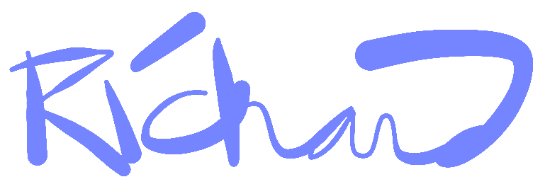

Hello, I’m a graphic designer and photographer currently working in the field of blindness and disabilities.
I made my first website in 1999 when I was a teenager. In 2004 I finished a degree in graphic design. Eventually this led me to the American Printing House for the Blind where I’ve worked since 2010. Currently I am principally responsible for photography and videography.
Early in my experience looking through cameras I was deeply affected by photographer Sam Abell. He teaches what his father taught him, “compose and wait.”
That is, frame your shot but wait to release the shutter until just the right moment, gesture, expression, action, or light. This proved an invaluable guiding principle when I began photographing people with disabilities.
I saw him again recently. He said it had become his goal to make a picture worthy of his hero, Henri Cartier-Bresson. I knew then that my own goal would be to make a picture worthy of Sam Abell.

Richard Irvine
Louisville, Kentucky USA
irvine@hey.com